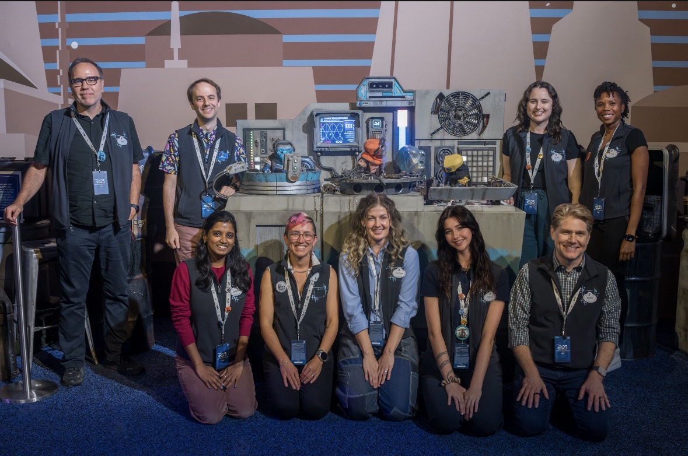

Experience
Creative Technologist Intern
Worked across emerging technology R&D for interactive character experiences, combining machine learning, computer vision, real-time systems, prototyping, and guest research.
- Led an exploratory R&D initiative investigating Gaussian splatting for real-time previsualization and spatial planning for autonomous character experiences.
- Helped develop and conduct guest research for a live public experience, contributing to the collection of 750+ participant responses at D23.
- Conducted vision-language model and computer vision research for multimodal character perception, including benchmarking against hand-labeled ground truth.
- Explored emerging motion diffusion and generative motion approaches for expressive physical character movement.
Focus Areas

Graduate Research Assistant
Developed machine-learning systems for understanding how people can interact with objects and environments, connecting 3D perception research with real-time game-engine applications.
- Developed a deep-learning system for 3D object and affordance understanding using a DGCNN point-cloud model trained on 8,000+ PartNet examples.
- Built Python, PyTorch, and Open3D pipelines for point-cloud processing, label generation, model training, and evaluation.
- Integrated model predictions into Unreal Engine 5 to automatically generate interaction points, collision volumes, and gameplay metadata.
Focus Areas
Game AI Research Intern
Researched intelligent character behavior and the ways different AI systems influence how players perceive autonomous agents.
- Designed and evaluated autonomous drone behaviors using reinforcement learning and traditional control systems.
- Investigated how locomotion influenced perceptions of intelligence, naturalness, competence, and aliveness.
- Built experimental environments and evaluation methodologies for studying learned character behavior.
Focus Areas
Graphic Design & Digital Media
Create visual content and manage digital media for NYU Women's Volleyball, coordinating with coaching staff and athletics stakeholders across campaigns and live events. Previously designed digital and print graphics for Colorado College Athletics, working to rapid production timelines with feedback and approvals across multiple stakeholders.